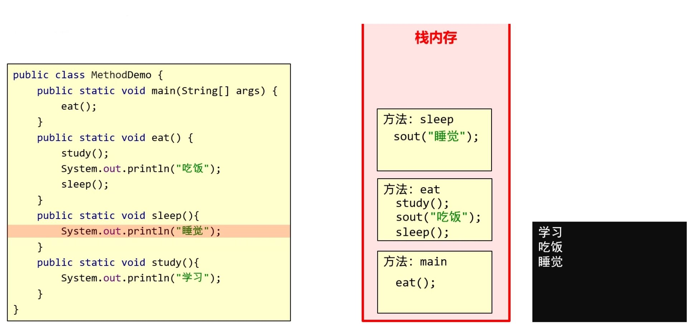

01_Java基本语法结构
一、前置准备
1. CMD
1.1 如何打开cmd
win+r打开运行窗口- 输入
cmd回车
1.2 常用cmd命令
| 操作 | 说明 |
|---|---|
| 盘符名词: | 切换到该盘符 |
| dir | 列出当前路径下的所有内容 |
| cd 目录 | 进入单级目录 |
| cd.. | 回退到上一级目录 |
| cd 目录1… | 进入多级目录 |
| cd \ | 回退到盘符目录 |
| cls | 清屏 |
| exit | 退出cmd |
在windows操作系统当中，文件名或者文件夹名是忽略大小写的。
2. Java概述
2.1 Java是什么
人与计算机进行信息交流沟通的一种编程语言
1）Java版本：
- Java5.0：Java第一个大版本更新（前面是1.1、1.2、1.3、1.4）
- Oracle收购之后分为过渡版本和长期支持版本（LTS），以下是常用LTS
- Java8.0：目前绝大数公司正在使用的版本，因为这个版本最稳定
- Java17.0：目前最新的稳定版本 版本向下兼容
2）Java的三大平台
- JavaSE：SE即标准版，主要用来开发桌面应用。 C/C++加载速度快，更有优势
JavaME：ME即微缩版，主要用来做移动类、嵌入式开发。 已经被Android和iOS替代了- JavaEE：EE即企业版，主要从事后台服务器的开发。 也是Java的主要应用方向
3）Java的主要特性
- 面向对象
- 安全性
- 多线程
- 简单易用
- 开源
- 跨平台
- 针对于不同的操作系统，Java提供了不同的虚拟机
- 虚拟机会把Java语言翻译成操作系统能看得懂的语言
4）JDK和JRE JDK包括JRE，JRE包括JVM
- JDK（Java Development Kit）：Java开发工具，包含了JRE和开发工具
- JVM
- 核心类库（Java API）
- 开发工具（javac、java、jdb、jhat…）
- JRE（Java Runtime Environment）：Java运行环境
- JVM
- 核心类库（Java API）
- 运行工具（删去了一些开发才会用到的工具）
- JVM（Java Virtual Machine）：Java虚拟机，Java程序运行的地方
2.2 下载与安装
- Oracle官网下载jdk
- 安装一路下一步，注意路径不要有中文 建议专门建一个文件夹，以后所有的开发工具都放到里面，方便管理
2.3 jdk安装目录
| 目录名称 | 说明 |
|---|---|
| bin（最常用） | 存放JDK的各种工具命令。javac和java就放在这个目录 |
| conf | 存放JDK的相关配置文件 |
| include | 存放一些平台特定的头文件 |
| jmods | 存放JDK的各种模块 |
| legal | 存放JDK各模块的授权文档 |
| lib | 存放了JDK工具的一些补充JAR包 |
2.4 环境变量
作用：在 cmd 的任意目录下都可以启动某个程序
在启动软件时，操作系统会先在当前路径下找，如果找不到再到环境变量的路径中去找，如果都找不到就提示无法启动。
步骤：
- 右键我的电脑点击属性
- 找到高级系统设置
- 选择高级，点击环境变量
- 在系统变量中找到
PATH，点击编辑 - 新建输入程序的完整路径
- 可上移到最上面（更快）
cmd在环境变量中从上往下查找，上面的路径打开更快
最新从官网上下载的 JDK 安装时会自动配置 javac、java
的环境变量 ① JAVA_HOME ：告诉操作系统 JDK
安装在了哪个位置（未来其他技术要通过这个找 JDK） 
② Path ：告诉操作系统 JDK 提供的
javac（编译）、java（执行） 命令安装到了哪个
2.5 Java运行流程
- 编写程序
- 编译程序：编译后会产生一个.class后缀的字节码文件
.java文件：自己编写的代码.class文件：计算机执行的文件
- 运行程序：运行的是编译之后的class文件
- javac + 文件名.java （编译java文件）
- java + 文件名（运行编译之后的class文件）
3. 高级记事本
常用的有 Editplus、Notepad++、Sublime，支持语法 Notepad++官网下载 设置 =>首选项 => 左侧选择新建 => 语言选择 Java 编码选择 ANSI，否则可能出现中文乱码
二、基本概念
1. 注释
注释的内容不参与编译和运行，仅仅是对代码的解释说明而已。
最讨厌写注释，和不写注释的人
单行注释
1
// 单行注释多行注释
1
2
3
4/*
多行注释
多行注释
*/文档注释（暂时用不上） javadoc工具根据文档注释生成文档
1
2
3
4/**
文档注释
文档注释
*/
2. 关键字
2.1 关键字概念及特点
被 Java 赋予了特定含义的英文单词
- 关键字字母全部小写
- 常用的代码编辑器会有高亮显示
| abstract | assert | boolean | break | byte |
|---|---|---|---|---|
| case | catch | char | class | const |
| continue | default | do | double | else |
| enum | extends | final | finally | float |
| for | goto | if | implements | import |
| instanceof | int | interface | long | native |
| new | package | private | protected | public |
| return | strictfp | short | static | super |
| switch | synchronized | this | throw | throws |
| transient | try | void | volatile | while |
2.2 class
作用：定义一个类 类：Java 项目中最基本的组成单元，一个完整的 Java
项目可能有成千上万个类 1
2
3public class HelloWorld{ //class后面跟的是类名
//类名后面有一对大括号，是类的内容
}
3. 字面量
作用：告诉程序员数据在程序中的书写格式
| 字面量类型 | 说明 | 程序中的写法 |
|---|---|---|
| 整数 | 不带小数的数字 | 666，-88 |
| 小数 | 带小数的数字 | 13.14，-5.21 |
| 字符 | 必须使用单引号，有且仅能一个字符 | ‘A’，‘0’， ‘我’ |
| 字符串 | 必须使用双引号，内容可有可无 | “HelloWorld”，“世界” |
| 布尔值 | 布尔值，表示真假，只有两个值：true，false | true 、false |
| 空值 | 一个特殊的值，空值 | null |
扩展：
- 制表符 \t：在打印的时候把前面字符串的长度补齐到8或8的整数倍（最少补1个空格，。最多补8个）
null：不能直接打印，如果要打印需用字符串类型“null”
4. 变量
变量是值的容器，定义变量可以存放值，变量可以输出打印、参与计算
1
2//数据类型 变量名 = 数据值;
int a = 10;
注意事项：
- 变量名不能重复
- 变量在使用前必须赋值
- 在一条语句中，可以定义多个变量 可续性差
5. 数据类型
5.1 进制
二进制：逢二进一，借一当二 不同进制的表示形式：
- 二进制：以
0b开头 - 十进制：默认
- 八进制：以
0开头 - 十六进制：以
0x开头
任意进制转十进制： 系数 * 基数的权次幂 相加 十进制转任意进制：除基取余（不断除基数到商为0，余数倒着拼起来）
5.2 Java数据类型的分类
- 基本数据类型
- 引用数据类型 数组和面向对象再深入学习
5.3 基本数据类型 （四类八种）
数值取值范围大小：
double > float > long > int > short > byte
| 数据类型 | 关键字 | 内存占用（字节） | 取值范围 |
|---|---|---|---|
| 整数 | byte | 1 | -2^7 ~ 2^7-1 (-128~127) |
| short | 2 | -2^15 ~ 2^15-1 (-32768~32767) | |
| int | 4 | -2^31 ~ 2^31-1（10的9次方） | |
| long | 8 | -2^63 ~ 2^63-1（10的18次方） | |
| 浮点数 | float | 4 | 1.401298e-45 ~ 3.402823e+38 |
| double | 8 | 4.9000000e-324 ~ 1.797693e+308 | |
| 字符 | char | 2 | 0-65535 |
| 布尔 | boolean | 1 | true，false |
1 | |
注意事项：
- 定义
long类型变量时，在数据值的后面加上L后缀（大小写都可以，建议大写区分1和l） - 定义
float类型变量时，在数据值的后面加上F后缀（大小写都可以）
6. 标识符
标识符：给类、方法、变量等起的名字
6.1 命名规则：
- 硬性要求：否则代码会报错
- 只能由数字、字母、下划线_、美元符号$组成
- 不能以数字开头
- 不能是关键字
- 区分大小写
- 软性建议： 代码不会报错，但是会让代码显得比较low
- 小驼峰命名法：方法、变量名
- 一个单词时全部小写
- 多个单词时第一个单词首字母小写，其他单词首字母大写
- 大驼峰命名法：类名
- 一个单词时首字母大写
- 多个单词时每个单词首字母大写
6.2 阿里巴巴命名规范
7. 键盘录入和输出
7.1 Scanner 类
Java 帮我们写好一个类叫 Scanner
,这个类可以接收键盘输入的数字，我们只要使用 Scanner
这个类就可以了
导包：告诉编译器
Scanner这个类在哪1
import java.util.Scanner;创建对象： 创建一个
Scanner类1
Scanner sc = new Scanner(System.in);接收数据： 将键盘录入的数据存起来
1
int i = sc.nextInt();
7.2 输入格式
- 遇到空格、回车、制表符停止
nextInt ()：接收整数并返回nextDouble()：接收浮点数，也能接收整数，但都当做浮点数返回next()：接收任意数据，返回一个字符串
- 可以接收空格和制表符，遇到回车停止
nextLine()：接收一行数据，返回一个字符串
两套体系不能混用，如果先使用 1. 中输入再使用
nextLine 会导致 nextLine 接收不到数据
7.3 输出格式
println输出并换行
1 | |
printf格式化输出 类似 C 语言中的printf，%s表示占位符，输出默认无换行，可在后面加上\n或sout实现换行效果1
2int n = 1;
System.out.printf("第%s条", n); //第一条
8.IDEA
8.1 IDEA概述
IDEA 全称 Intellij IDEA, 是用于 Java 语言的集成开发环境，它是目前业界公认的用于 Java 程序开发最好的工具 集成开发环境：把代码编写，编译，执行，调试等多种功能综合到一起的开发工具
8.2 IDEA下载和安装
- 下载： IDEA下载
- 安装： 一路下一步，默认设置即可（建议修改安装目录）
8.3 IDEA层级结构介绍
这些结构的划分，是为了方便管理类文件
project（项目、工程）- 淘宝、京东、贴吧属于一个个项目
module（模块）- 一个项目中存在许多模块，不同模块存放不同模块的业务功能代码，例如论坛模块
package（包）- 一个模块中还有许多业务，存放在不同的包里，例如发帖、评论
class（类）- 一个业务中还有很多类，具体写代码实现的地方
8.4 IDEA操作步骤
创建
project项目创建
module模块创建
class类创建暂时不需要 package 一般用企业域名倒写加功能 com.baidu.search 实际是多级目录package包在类中编写代码
完成编译运行
8.5 IDEA一些好用设置
有些 IDEA 设置十分方便，能使编码效率倍增，但建议新手暂时不要开启，前期多自己敲，待养成良好编程习惯之后开启节省时间
- 智能提示忽略大小写： Settings -> Editor -> General -> Code Completion -> Match case 取消勾选
- 自动导包： Settings -> Editor -> General -> Auto Import -> Add unambiguous imports on the fly 和 Optimize imports on the fly (for current project) 勾选
- 字体： Settings -> Editor -> Font -> 个人喜欢 Consolas 字体
- 背景： Settings -> Appearance & Behavior -> Appearance -> Background Image… -> 选择自己喜欢的图片，还可以设置透明度
三、运算符
1. 运算符与表达式
1.0 概念
- 运算符： 对字面量或者变量进行操作的符号
- 表达式：用运算符把字面量或者变量连接起来符合Java语法的式子
1.1 算术运算符
1）/ 除法
- 整数相除得到的也是整数（整除的商），如果想要得到精确结果，必须有浮点数参与运算
- 浮点数直接参与运算，得到的结果可能是不精确的
1 | |
2） % 取模
- 整数才能取模，得到的是相除的余数
1 | |
3）+ 加法
- 当 + 操作中出现字符串时，作用是将字符串从左至右依次拼接为一个新字符串
- 当 + 操作中出现了字符时，会将 char 转换成 ASCⅡ 码表中对应的数字计算
1 | |
4）- 减法 和 * 乘法
- 与小学数学一样
5）自增自减运算符
++自增运算法：在变量前先加再用，再变量后先用再加--自减运算法：在变量前先减再用，再变量后先用再减
1 | |
1.2 赋值运算符
=把等号右边的计算结果赋值给左边的变量+= -= /= *= %=把左边和右边计算的结果赋给左边，底层都隐藏了一个强制类型转换
1 | |
1.3 关系运算符
又叫比较运算符，左边和右边比较进行判断，运算结果一定是
boolean 类型，如果成立就返回
true，如果不成立就返回 false
| 符号 | 解释 |
|---|---|
| == | 判断左边跟右边是否相等 |
| != | 判断左边跟右边是否不相等 |
| > | 判断左边是否大于右边 |
| >= | 判断左边是否大于等于右边 |
| < | 判断左边是否小于右边 |
| <= | 判断左边是否小于等于右边 |
1.4 逻辑运算符
1）逻辑运算符 逻辑运算符两侧的值只能是
boolean 类型
| 符号 | 名字 | 说明 |
|---|---|---|
| & | 逻辑与（且） | 并且，两边都为true，结果才为true |
| | | 逻辑或 | 或者，两边都为false，结果才为false |
| ^ | 逻辑异或 | 相同为false，不同为true |
| ! | 逻辑非 | 取反 |
2）短路逻辑运算符 （常用这个） 如果左边能确定整个表达式的结果，右边不执行，提高了代码的执行效率
| 符号 | 名字 | 说明 |
|---|---|---|
| && | 短路与 | 结果和 & 相同，但具有短路效果 |
| || | 短路或 | 结果和 | 相同，但具有短路效果 |
1 | |
1.5 三元运算符
又叫三元表达式或问号冒号表达式，三元运算符的运算结果一定要被使用，要么赋值给变量赋值，要么打印出来，否则语法错误
格式： 关系表达式 ？ 表达式1 ：表达式2 ；
- 计算关系表达式的值
- 如果关系表达式的值为
true，那么执行表达式1 - 如果关系表达式的值为
false，那么执行表达式2
1.6 位运算符
位运算符作用在所有的位上，并且按位运算
| 符号 | 含义 | 规则 |
|---|---|---|
| & | 按位与 | 对应位都是1，则结果为1，否则为0 |
| | | 按位或 | 对应位都是1，则结果为0，否则为1 |
| >> | 左移 | 向左移动，低位补0（移动一位相当于乘2） |
| << | 右移 | 向右移动，高位按正负补0或1（移动一位相当于除2） |
| >>> | 无符号右移 | 向右移动，不管正负高位都补0，也就是结果都是正数 |
此外还有按位异或、按位取反
1.7 运算符的优先级
小括号优于一切！！！
2. 类型转换
2.1 隐式类型转换
也叫自动类型提升，赋值给精度更高的类型时，程序自动将低精度提升到高精度
精度从高到低：double > float > long > int > short > byte
两种规则：
- 低精度和高精度运算时，低精度的先提升为大精度再进行运算
byte、short、char三种类型的数据在运算的时候，都会直接先提升为int再进行运算
2.2 强制类型转换
如果要把高精度值赋给低精度类型时，需要使用强制类型转换（数据会丢失精度）
1 | |
四、流程控制语句
1. 顺序结构
顺序结构是程序中最基本最简单的执行流程，按照代码的先后顺序，从上往下执行
2. 分支结构
2.1 if-else 语句
- 计算关系表达式 （ 关系表达式的值只能是
boolean类型的） - 如果关系表达式值为
true执行语句体1 - 如果关系表达式值为
false执行语句体2 - 继续顺序执行大括号后面的语句
1 | |
if-else 还可以有级联和嵌套
2.2 switch-case 语句
- 计算表达式 （取值为
byte、short、int、char、String、枚举） - 表达式的值和
case的值从上至下顺次比较，遇到相同的值就从对应case开始执行，直至整个switch语句结束或者遇到break（case后的值只能为字面量，不能为变量） - 如果所有
case的值与表达式的值都不匹配，就会执行default对应的语句
1 | |
default可省略，位置可不放在最后 （但不建议）case下如果没写break，会出现case穿透switch语句在 jdk12 之后的新特性可简化语法
1 | |
3. 循环结构
3.1 for 循环
3.1.1 传统 for 循环
- 执行初始化语句
- 执行条件判断语句
- 值为
false，跳出循环 - 值为
true，进入循环- 执行循环体语句
- 执行条件控制语句
- 回到 2 继续判断
- 值为
1 | |
3.1.2 for-each 循环
for-each 循环也称为增强型 for
循环，可以简化对数组的遍历操作。在这种循环中，每次迭代都会将数组中的下一个元素赋值给声明的
迭代变量，迭代变量
是一个局部变量，它只是一个在每次迭代中指向数组元素的临时引用，并不影响原始数组的内容
1 | |
for-each循环只能遍历访问数组的元素，而不能用于修改for-each循环在循环过程中会自动处理数组越界的情况，因此不需要担心索引越界的问题
3.2 while 循环
1 | |
3.3 do-while 循环
1 | |
3.4 三种循环的区别和使用
for和while是先判断再执行循环体- 当知道循环次数或循环范围时，常用
for循环 - 不知道循环的次数和范围，只知道循环的结束条件时，常用
while循环
- 当知道循环次数或循环范围时，常用
do-while是先执行再判断
3.5 跳转控制语句
1）break
- 结束整个循环
- 用于
switch和循环中
2）continue
- 结束本次循环，继续执行下次循环
- 用于循环中
五、数组
1. 数组介绍
数组是一种容器，可以存取多个同种类型的值
存在隐式转换，比如 byte 和 short 可以存到
int
型的数组中，但建议容器类型和存储的数据类型保持一致
2. 数组的定义和初始化
2.1 数组的定义
1 | |
2.2 数组的初始化
初始化：就是在内存中为数组开辟空间，并将数据存入容器的过程
- 等号两边的数据类型必须保持一致
- 数组一旦创建，长度不能发生改变
2.2.1 静态初始化
静态初始化时需要指明每个数组元素，系统根据元素个数计算数组长度
1 | |
2.2.2 动态初始化
动态初始化时只需指明数组的长度，由系统为数组分配初始值
- 整数类型：默认初始化值
0 - 浮点数类型：默认初始化值
0.0 - 字符类型：默认初始化值
'/u0000'空格 - 布尔类型：默认初始化值
false - 引用数据类型：默认初始化值
null除了四类八种数据类型都是引用数据类型
1 | |
3. 数组的元素访问
3.1 数组的地址
直接访问数组名时，得到的是数组的地址值，也就是数组在内存中的位置
1 | |
3.2 访问数组元素
要想访问或修改数组中某位具体的值，需要用到索引 索引：也叫角标、下标，从 0 开始连续不间断 当访问了数组中不存在的索引就会出现索引越界异常，数组的有效索引是 0 到 数组的长度减 1
1 | |
3.3 数组的遍历
访问数组的每一个元素
1 | |
4. 二维数组
二维数组就是在数组里面存数组，将数组分组管理
4.1 初始化
1 | |
4.2 元素访问
1 | |
5. 数组在内存
5.1 Java内存分配
- 本地方法栈： JVM 在使用操作系统功能时使用，与开发无关
- 寄存器： 给 CPU 使用，与开发无关
- 栈： 方法运行时使用的内存，比如
main方法运行是进入方法栈中执行 - 堆： 存储对象或数组，
new创建的都存储在堆空间 - 方法区： 存储可运行的 class 文件 从 jdk8 开始取消了方法区，新增元空间，原方法区的功能一部分放到堆中，一部分放到元空间中

5.2 数组在内存中的存储
- 方法进入栈中执行，变量定义在栈中，变量的数据也存储在栈中
new出来的都在堆中开辟空间并产生地址- 数组名在栈内存中存储的是堆中数组对应的地址，数组元素实际存储在堆中，通过数组名加索引去访问堆中的数组元素

数组赋值给数组时，实际是将数组的地址赋值，并没有在堆中开辟新的内存
1 | |
5.3 二维数组在内存中的存储
- 栈内存中存的是二维数组在堆内存中的地址值
- 堆内存中二维数组存的是每个一维数组的地址值
- 一维数组中存储的是真正的数据元素

六、方法
1. 方法介绍
方法（method）是程序中最小的执行单元，将一些重复具有独立功能的代码打包到方法中 (相当于 C 语言中的函数)
作用：
- 提高代码的复用性
- 提高代码的可维护性
2. 方法的定义和调用
2.1 基本概念
- 方法定义：把代码打包的过程（创建方法）
- 方法调用：方法定义之后需要手动使用才会运行（使用方法）
- 形参：方法定义中的参数
- 实参：方法调用中的参数
2.2 格式和注意事项
1 | |
参数是数据类型 变量名，可以没有，也可以有多个- 返回值类型为
void时，可省略return，或者只写return无返回值，表示结束方法 - 返回值类型不为
void时，返回值和返回值类型必须对应 - 方法需要先定义才能调用，调用时
形参和实参必须一一对应
3. 方法的重载
在同一个类中多个方法名相同而参数不同的方法
- 重载对应方法的定义，与方法的调用无关
- 重载根据方法名和参数（数量，类型，顺序）进行识别，与返回值无关
1 | |
4. 方法在内存
方法运行时使用栈内存，进栈运行，运行完毕就出栈，先进后出 
- 基本数据类型：数据值存储在自己空间中
- 传参时传递的是真实的数据，形参的改变不会影响实参的值
- 引用数据类型：数据值存储在其他空间中，自己空间中存储的是地址值
- 传参时传递的是地址值，通过地址值修改形参会影响实参的值
一、 在方法中声明的变量，即该变量是局部变量 每当程序调用方法时，系统都会为该方法建立一个方法栈，局部变量就存放在方法栈中，当方法结束系统会释放方法栈，该方法中声明的变量随着栈的销毁而销毁，这就是局部变量只能在方法中使用的原因。 在方法中声明的变量可以是基本类型的变量，也可以是引用类型的变量 （1）基本类型： 变量名和值（变量名和值是两个概念）存放在方法栈中 （2）引用类型： 所声明的变量（实际存储的是地址值）存放在方法栈中，该变量所指的对象放在堆内存中 二、 在类中声明的成员变量，也叫全局变量 全局变量在堆中存放（所以全局变量不会随着某个方法执行结束而销毁）。 同样在类中声明的变量既可是基本类型的变量，也可以是引用类型的变量 （1）基本类型：变量名及其值都放在堆内存中 （2）引用类型：变量名和值都存在堆中，但变量存储的仍是地址值，该内存地址值指向所引用的对象